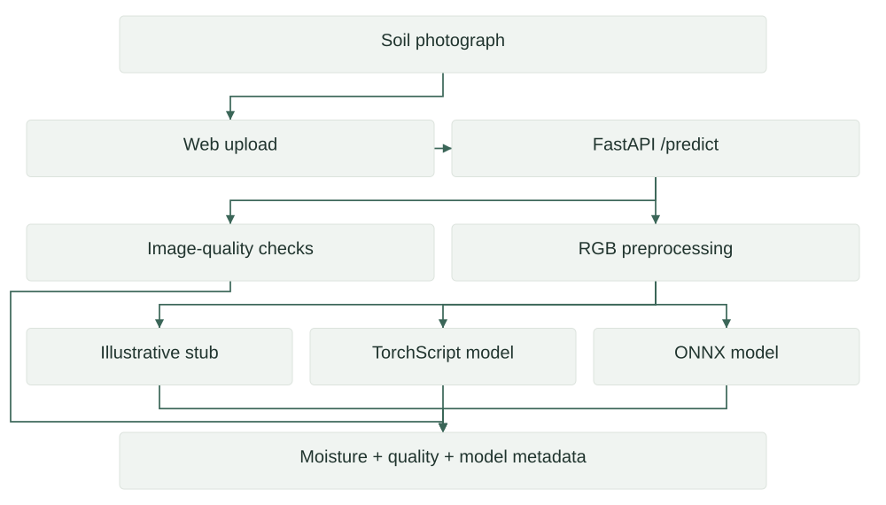

Research · Application prototype
AgroDry (Stubby)
Image-based soil-moisture estimation
An image-upload interface and inference API for soil-moisture estimation, supported by preprocessing and frequency-aware training experiments.
01
Architecture
Connect a soil photograph to a readable moisture estimate and basic image-quality feedback.

02
Technical structure
| Component | Implementation | Role |
|---|---|---|
| Interface | HTML image-upload pages | Image selection and returned estimate |
| API | FastAPI routes | Health, version, prediction |
| Quality checks | Brightness + sharpness | Heuristic image feedback |
| Model wrapper | Stub / TorchScript / ONNX | Configurable inference path |
| Training | ResNet + AFSC/DCT experiments | Model development material |
The wrapper resizes images to 224 × 224 and uses normalized RGB tensors. It can fall back to the stub if a requested trained backend is unavailable; actual execution mode must be made explicit.
03
Evidence & scope
| Area | Evidence | Reference |
|---|---|---|
| Implemented surface | Upload interface and inference wrapper | Local backend and frontend source |
| Execution modes | Three configured backend options | Backend/model.py |
| Current result boundary | No field-accuracy claim added | Trained export and evaluation to be reconciled |
04